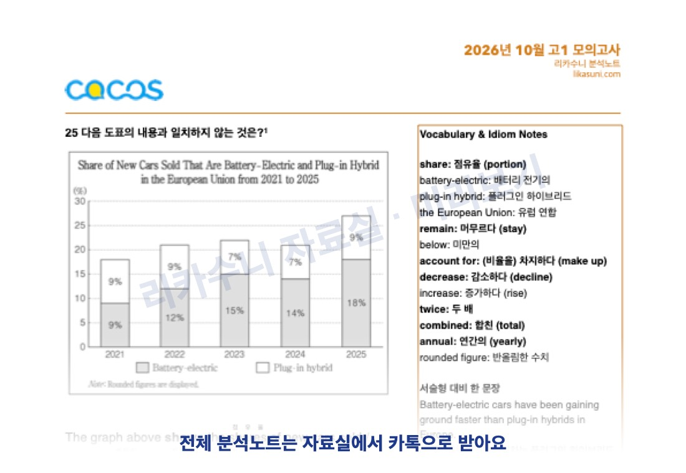

2026 고1 10모 영어 25번 도표 해설·분석이에요. (2026 10월 고1 영어 모의고사 · 전국연합학력평가 · 도표 내용과 일치하지 않는 것 · 정답 ④)
정답 근거, 선택지별 숫자 확인, 구문(배수 표현 less than twice · 대명사 that of · 독립분사구문 · remain + 보어), 어휘를 정리했고 분석노트 전자책·pdf 보는 곳은 글 아래에 있어요.
안녕하세요, 이매동 코코스학원 리카수니 원장입니다.
학생 요청으로 만든 분석노트를 바탕으로 정리했어요. 시험지를 옆에 펴 놓고 보시면 더 잘 보여요.
· 시험: 2026년 10월 고1 전국연합학력평가 영어
· 번호: 25번 (도표 내용과 일치하지 않는 것)
· 정답: ④
2021~2025년 유럽 연합(EU)에서 팔린 신차 중 배터리 전기차와 플러그인 하이브리드의 점유율을 보여 주는 도표예요.
배터리 전기차는 9% → 18%로 대체로 늘었고, 플러그인 하이브리드는 해마다 10% 미만이에요.
· ④ 2023년 배터리 전기차 점유율이 플러그인 하이브리드의 '두 배에 못 미쳤다(less than twice)'고 했어요.
· 2023년: 배터리 전기 15%, 플러그인 하이브리드 7% → 7%의 두 배는 14%인데 15%는 그보다 높아요.
→ 두 배를 넘었으니 도표와 일치하지 않아 정답 ④예요.
· ① 플러그인 하이브리드: 9·9·7·7·9% → 해마다 10% 미만, 일치
· ② 2021년 둘 다 9% → 일치
· ③ 2022→2023 플러그인 9%→7% 감소, 배터리 12%→15% 증가 → 일치
· ⑤ 합계 18·21·22·21·27% → 2024→2025 6%p 증가가 가장 큼, 일치
도표 문제는 twice·half·the largest 같은 비교 표현이 나오면 바로 계산해 보세요.

1) remain + 보어 (~에 머무르다)
→ In each year, the share of plug-in hybrid car sales remained below 10%.
2) 대명사 that of (= the share of) / 독립분사구문 each accounting for
→ the share of battery-electric car sales was the same as that of plug-in hybrid car sales, each accounting for 9% of new car sales
3) while (반면에) 대조
4) 배수 표현 less than twice that of (~의 두 배에 못 미치는)
→ the share of battery-electric car sales was less than twice that of plug-in hybrid car sales
· share 점유율
· battery-electric 배터리 전기의
· plug-in hybrid 플러그인 하이브리드
· the European Union 유럽 연합
· remain 머무르다
· below ~ 미만의
· account for (비율을) 차지하다
· decrease 감소하다 ↔ increase 증가하다
· twice 두 배
· combined 합친
· annual 연간의
· rounded figure 반올림한 수치
· gain ground 자리를 넓히다, 우세해지다
분석노트에 '서술형 대비 한 문장'(Battery-electric cars have been gaining ground faster than plug-in hybrids in Europe. 유럽에서 배터리 전기차는 플러그인 하이브리드보다 더 빠르게 자리를 넓혀 왔다)과 영어 핵심 요약(Core Summary)을 해석과 함께 정리해 두었어요.
아래 자료실 페이지에서 이 문항 분석노트를 전자책으로 바로 볼 수 있어요. (끊어 읽기·해석·구문·어휘 2쪽)
인쇄용 pdf 는 카카오 로그인 후 카톡으로 받을 수 있고, 같은 회차 다른 번호도 요청할 수 있어요.
같은 페이지 위쪽 회차 메뉴에서 2026 고1 10모 영어 분석노트·변형문제·단어 pdf, 전과목 문제지·정답 pdf와 등급컷도 볼 수 있어요.
▶ 2026 고1 10모 영어 25번 해설·전자책 (리카수니 자료실)
https://data.likasuni.com/moe/go1/2026-10/eng/25/
분당 이매동 코코스학원은 초등·중등·고등 영어와 수학을 가르쳐요.
모의고사·수능특강·내신 대비가 궁금하시면 편하게 문의해 주세요.
· 홈페이지: https://www.cocosedu.co.kr/
· 주소: 경기 성남시 분당구 판교로 476 2층